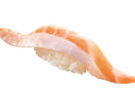
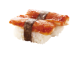
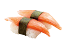
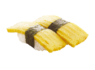
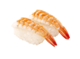
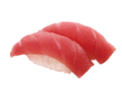
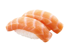
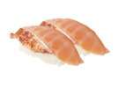

|

鮭魚肚(1貫)
サーモンハラス / Salmon Belly 油脂豐厚、香嫩滑潤。 |

蒲燒鯛魚
ティラピア鯛の蒲焼 / Grilled Tilapia Belly 獨特醬料佐味，口感香嫩。 |

蟹風味棒
かに蒲鉾 / Imitation Crab Leg Meat 使用頂級魚漿，清甜鮮美讓人無法抵擋。 |

玉子燒
玉子焼き / Egg Omelet 傳統日式煎蛋，堆疊口感層層有蛋香味。 (蛋奶素) |
|

鮮蝦
すしエビ / Shrimp 蝴蝶刀工切法，鮮甜可口必嚐基本款。 |

鮪魚
まぐろ / Tuna 綿密口感入口即化，海洋鮮味在齒間擴散。 |

鮭魚
サーモン / Salmon 來自挪威深海的美味，油花均勻脂香豐厚。 |

燒炙鮭魚肚
焼サーモンハラス / Grilled Salmon Belly 魚肚部位油脂豐厚燒炙後更香嫩滑潤。 |